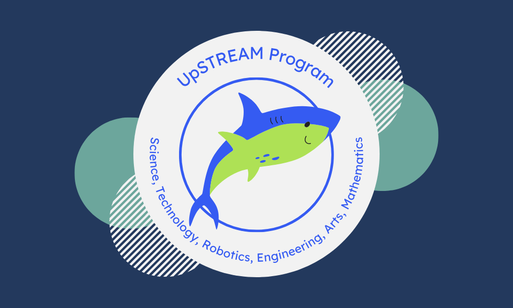
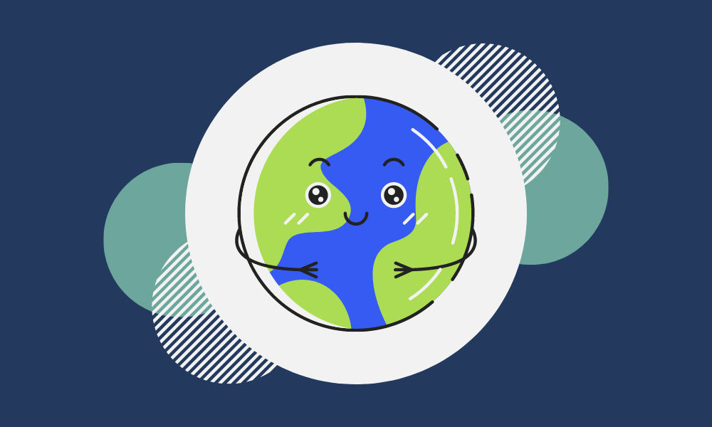

In conjunction to his various education resources, one of Kevin's first projects was 30+, a math game released in June 2021. He created this game with Unity Engine and C#. The game was inspired by education injustices further revealed by the COVID-19 pandemic, especially with some students facing as much as two years of learning loss. Players are prompted to answer basic mathematical facts with varying levels of difficulty, adjusting for secondary-aged students to challenge even the best of mathemeticians.

One is an app designed to educate and prompt primary-aged students into action regarding various environmental issues, including pollution, climate change, and water conservation. Created with JavaScript in 2022, the app has since been released for several local elementary school classrooms. The concept stems from Kevin's long-time passion for the environment. Given that the world is plagued with a dire climate situation and worsening overall condition, One is the least he could do to bring awareness to environmental issues.

Kevin has been a researcher with the UW CSE Social Futures Lab since Summer 2022. He is working on a social computing education research project designed to determine and improve students' understanding of social computing. As part of this effort, Kevin created modules for several social computing topics, including encryption, misinformation, and data management. He is currently conducting outreach to secondary schools in the Seattle metropolitan area, with his team teaching these modules and collecting data.

Spelling Bee became Kevin's next project after 30+ in April 2022. Instead of being mathematically-based, Spelling Bee is a literacy assessment game to test students on their spelling. The game was created with JavaScript, following a similar concept to 30+. At the time of creation, students had just returned to this classroom from the pandemic, with literacy rates continuing to decline. Kevin's hope is that Spelling Bee encourages students to engage in literacy while developing their typing speeds, both important skills in today's world.